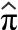

HIV infection rates
Researchers in the late 1980s collected data from a sample of 4,955 homosexual men in Baltimore, Chicago, Los Angeles and Pittsburgh. We can estimate the proportion infected by the HIV virus in all homosexual men in these four cities with the sample proportion of infected men (1,883 out of 4,955)
 = p = 1883/4955 = 0.380
Ewes in region
An official from the Ministry of Agriculture wants to estimate the average number of ewes in a region's farms that are available for lambing in the spring. Data were collected from a random sample of 100 farms from the 3,535 in the region.
There was a total of 26,360 ewes in the sampled farms, so the mean number of ewes per farm was 263.6. This provides an estimate of the average in the whole region,
 =
=  = 263.6 ewes
= 263.6 ewes
It also allows us to estimate the total number of ewes in the region,

Comparing beers
A brewery wishes to assess the effect of an additive on the alcohol content of its premium beer. Several batches are brewed, both with and without the additive, and the alcohol content of each batch is recorded.
Here there are two underlying populations — distributions describing the alcohol content of beer with and without the additive. The shapes of these distributions could potentially differ in various ways, but the brewer is mostly interested in whether the additive changes the mean alcohol content:

The sample means provide estimates of the corresponding population means and are the basis for answering the question.
The difference in sample means is an estimate of the difference between the unknown population means.